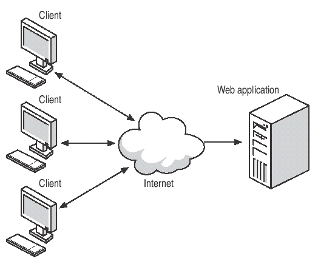
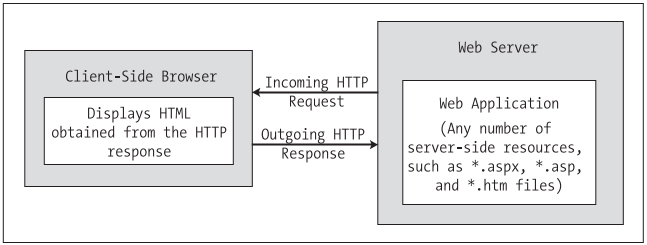

Chapter 23 - ASP.NET 2.0 Web pages and Web controls
Content
In this chapter and the next, you'll explore how the .NET platform facilitates the construction of browser-based presentation layers. To begin,
you'll quickly review a number of key web-centric concepts (HTTP, HTML, client-side, and server-side script) and the role of the web server (including the ASP .NET development server, WebDev.WebServer.exe).
With this web primer out of the way, the remainder of this chapter concentrates on the composition of ASP.NET (including the enhanced code-behind model) and
how to work with ASP.NET web controls. As you will see, ASP.NET 2.0 provides a number of new web controls, a new "master page" model, and various customization techniques.
Architecture of Web applications

A web application can be understood as a collection of files (*.htm, *.asp, *.aspx, image files, etc.) and related components (such as a .NET code library) stored within a particular set of directories on a given web server.
A web server is a software product in charge of hosting your web applications, and it typically provides a number of related services such as integrated security, File Transfer Protocol (FTP) support, mail exchange services, and so forth.
Internet Information Server (IIS) is Microsoft's enterprise-level web server product, and as you would guess, it has intrinsic support for classic ASP as well as ASP.NET web applications.
Web applications are very different animals from traditional desktop applications. The first obvious difference is that a production-level web application will always involve at least two networked machines (of course,
during development it is entirely possible to have a single machine play the role of both client and server). The machines in question must agree upon a particular wire protocol to determine how to send and receive data.
The wire protocol that connects the computers in question is the Hypertext Transfer Protocol (HTTP).
When a client machine launches a web browser (such as Netscape Navigator, Mozilla Firefox, or Microsoft Internet Explorer), an HTTP request is made to access a particular resource (such as an *.aspx or *.htm file) on the remote server machine.
HTTP is a text-based protocol that is built upon a standard request/response paradigm. For example, if you navigate to http://www.IntertechTraining.com, the browser software leverages a web technology termed Domain Name Service (DNS) that
converts the registered URL into a four-part, 32-bit numerical value (aka an IP address). At this point, the browser opens a socket connection (typically via port 80) and sends the HTTP request for the default page at the http://www.IntertechTraining.com website.
Once the hosting web server receives the incoming HTTP request, the specified resource may contain logic that scrapes out any client-supplied input values (such as values within a text box) in order to format a proper HTTP response.
Web programmers may leverage any number of technologies (CGI, ASP, ASP.NET, Java servlets, etc.) to dynamically generate the content to be emitted into the HTTP response. At this point, the client-side browser renders the HTML emitted from the web server.
The below figure illustrates the basic HTTP request/response cycle.

Another aspect of web development that is markedly different from traditional desktop programming is the fact that HTTP is an essentially stateless wire protocol. As soon as the web server emits a response to the client, everything about the previous interaction is forgotten.
Therefore, as a web developer, it is up to you take specific steps to "remember" information (such as items in a shopping cart) about the clients who are currently logged on to your site. As you will see in the next chapter,
ASP .NET provides numerous ways to handle state, many of which are commonplace to any web platform (session variables, cookies, and application variables) as well as some new techniques (view state, control state, and the cache).
Working with IIS virtual directories
A single IIS installation is able to host numerous web applications, each of which resides in a virtual directory. Each virtual directory is mapped to a physical directory on the local hard drive.
Therefore, if you create a new virtual directory named CarsRUs, the outside world can navigate to this site using a URL such as http://www.CarsRUs.com (assuming your site's IP address has been registered with the world at large).
Under the hood, the virtual directory maps to a physical root directory such as C:\inetpub\wwwroot\AspNetCarsSite, which contains the content of the web application.
Reads how to create a virtual directory by hand at page 831 of textbook.
The ASP.NET 2.0 Development server
ASP.NET 2.0 ships with a lightweight web server named WebDev.WebServer.exe. This utility allows developers host an ASP.NET 2.0 web application outside the bounds of IIS.
Using this tool, you can build and test your web pages from any directory on your machine (which is quite helpful for team development scenarios and for building ASP.NET 2.0 web programs on Windows XP Home Edition, which does not support IIS).
The role of HTML
Hypertext Markup Language (HTML) is a standard markup language used to describe how literal text, images, external links, and various HTML-based GUI widgets are rendered by the client-side browser.
An HTML file consists of a set of tags that describe the look and feel of a given web page. The basic structure of an HTML document tends to remain the same.
For example, *.htm files (or, alternatively, *.html files) open and close with <html> and </html> tags, typically define a <body> section, and so forth.
Keep in mind that HTML is not case sensitive. Therefore, in the eyes of the hosting browser, <HTML>, <html>, and <Html> are identical.
The <html> and </html> tags are used to mark the beginning and end of your document. As you may guess, web browsers use these tags to understand where to begin applying the rendering formats specified in the body of the document.
The <body> scope is where the vast majority of the actual content is defined. The <title> tags are used to specify the text string that should be placed in the title bar of the calling web browser.
HTML Form Development
The real action of an *.htm file occurs within the scope of the <form> elements. An HTML form is simply a named group of related UI elements used to gather user input, which is then transmitted to the web application via HTTP.
Do not confuse an HTML form with the entire display area shown by a given browser. In reality, an HTML form is more of a logical grouping of widgets placed in the <form> and </form> tag set:
<html>
<head>
<title>This Is the Cars Web Site</title>
</head>
<body>
<form id="defaultPage" name="defaultPage" action="ClassicAspPage.asp" method = "GET">
</form>
</body>
</html>
This form has been assigned the ID and name of "defaultPage". Typically, the opening <form> tag supplies an action attribute that specifies the URL to which to submit the form data,
as well as the method of transmitting that data itself (POST or GET).
The action attribute specifies the recipient of the incoming form data. In the above example, when the Summit button for this form is clicked, the form data should be sent to the ClassicAspPage.asp.
When you specify method = "GET" as the mode of transmission, the form data is appended to the query string as a set of name/value pairs separated by ampersands:
http://localhost/Cars/ClassicAspPage.asp?txtUserName=Andrew&txtPassword=abcd123$&btnSubmit=Submit
The other method of transmitting form data to the web server is to specify method = "POST". In this case, the form data is not appended to the query string, but instead is written to a separate line within the HTTP header.
Using POST, the form data is not directly visible to the outside world. More important, POST data does not have a character-length limitation (many browsers have a limit for GET queries).
The role of Client-Side Scripting
A given *.htm file may contain blocks of script code that will be emitted in the response stream and processed by the requesting browser.
There are two major reasons why client-side scripting is used:
- To validate user input before posting back to the web server
- To interact with the Document Object Model (DOM) of the target browser
Regarding the first point, understand that the inherent evil of a web application is the need to make frequent round-trips (aka postbacks) to the server machine to update the HTML rendered into the browser.
While postbacks are unavoidable, you should always be mindful of ways to minimize travel across the wire. One technique that saves round-trips is to use client-side scripting to validate user input before submitting the form data to the web server.
If an error is found (such as not specifying data within a required field), you can prompt the user of the error without incurring the cost of posting back to the web server. (After all, nothing is more annoying to users than posting back on a slow connection,
only to receive instructions to address input errors!)
In addition to validating user input, client-side scripts can also be used to interact with the underlying object model (the DOM) of the browser itself. Most commercial browsers expose a set of objects that can be leveraged to control how the browser should behave.
One major annoyance is the fact that different browsers tend to expose similar, but not identical, object models. Thus, if you emit a block of client-side script code that interacts with the DOM, it may not work identically on all browsers.
Introduction to ASP.NET
ASP.NET is a unified Web development model that includes the services necessary for you to build enterprise-class Web applications with a minimum of coding. ASP.NET is part of the .NET Framework, and when coding ASP.NET applications you have access to classes in the .NET Framework.
You can code your applications in any language compatible with the common language runtime (CLR), including Microsoft Visual Basic and C#. These languages enable you to develop ASP.NET applications that benefit from the common language runtime, type safety, inheritance, and so on.
The first major release of ASP .NET (version 1.x) brought about the following techniques:
- ASP.NET 1.x provides amodel termed code-behind, which allows you to separate presentation logic from business logic.
- ASP.NET 1.x pages are compiled .NET assemblies, not interpreted scripting languages, which translates into much faster execution.
- Web controls allow programmers to build the GUI of a web application in a manner similar to building aWindows Forms application.
- ASP.NET web controls automatically maintain their state during postbacks using a hidden form field named __VIEWSTATE.
- ASP.NET web applications are completely object-oriented and make use of the CTS.
- ASP.NET web applications can be easily configured using standard IIS settings or using a web application configuration file (Web.config).
ASP.NET 2.0 provides a number of new namespaces, types, utilities, and technologies to the .NET web development landscape. Consider this partial list:
- ASP.NET 2.0 no longer requires websites to be hosted under IIS during the testing and development of your site.
You are now able to host your site from any directory on the hard drive.
- ASP.NET 2.0 ships with a large number of new web controls (security controls, new data controls, new UI controls, etc.) that complement the existing ASP.NET 1.x control set.
- ASP .NET 2.0 supports the use of master pages, which allow you to attach a common UI frame to a set of related pages.
- ASP.NET 2.0 supports themes, which offer a declarative manner to change the look and feel of the entire web application.
- ASP.NET 2.0 supports web parts, which can be used to allow end users to customize the look and feel of a web page.
- ASP.NET 2.0 supports a web-based configuration and management utility that maintains your Web.config files.
The ASP.NET 2.0 namespaces
As of .NET 2.0, there are no fewer than 34 web-centric namespaces in the base class libraries. From a high level, these namespaces can be grouped into four major categories:
- Core functionality (e.g., types that allow you to interact with the HTTP request and response, Web Form infrastructure, theme and profiling support, web parts, etc.)
- Web Form and HTML controls
- Mobile web development
- XML web services
ASP.NET programming model
The ASP.NET Web page code model
ASP.NET web pages can be constructed using one of two approaches. You are free to create a single *.aspx file that contains a blend of server-side code and HTML (much like classic ASP).
Using the single-file page model, server-side code is placed within a <script> scope, but the code itself is not script code proper (e.g., VBScript/JavaScript).
Rather, the code statements within a <script> block are written in your managed language of choice (C#, Visual Basic .NET, etc).
If you are building a page that contains very little code (but a good deal of HTML), a single-file page model may be easier to work with, as you can see the code and the markup in one unified *.aspx file.
In addition, crunching your code and HTML into a single *.aspx file provides a few other advantages:
- Pages written using the single-file model are slightly easier to deploy or to send to another developer.
- Because there is no dependency between files, a single-file page is easier to rename.
- Managing files in a source code control system is slightly easier, as all the action is taking place in a single file.
The default approach taken by Visual Studio (when creating a new website solution) is to make use of a technique termed code-behind, which allows you to separate your programming code from your HTML presentation logic using two distinct files.
This model works quite well when your pages contain significant amounts of code or when multiple developers are working on the same website. The code-behind model offers a few additional benefits as well:
- Because code-behind pages offer a clean separation of HTML markup and code, it is possible to have designers working on the markup while programmers author the C# code.
- Code is not exposed to page designers or others who are working only with the page markup (as you might guess, HTML folks are not always interested in viewing reams of C# code).
- Code files can be used across multiple *.aspx files.
Regardless of which approach you take, do know that there is no difference in terms of performance. Also be aware that the single-file *.aspx model is no longer considered evil as proclaimed in .NET 1.x.
In fact, many ASP.NET 2.0 web applications will benefit by building sites that make use of both approaches.
Interacting with the Incoming HTTP Request
Unlike classic ASP , ASP .NET does not support an object named Request. However, all ASP.NET pages do inherit the System.Web.UI.Page.Request property, which provides access to an instance of the HttpRequest class type.
The below table lists some coremembers that, not surprisingly, mimic the same members found within the legacy classic ASP Request object.
| ApplicationPath |
Gets the ASP .NET application's virtual application root path on the server. |
| Browser |
Provides information about the capabilities of the client browser. |
| Cookies |
Gets a collection of cookies sent by the client browser. |
| FilePath |
Indicates the virtual path of the current request. |
| Form |
Gets a collection of Form variables. |
| Headers |
Gets a collection of HTTP headers. |
| HttpMethod |
Indicates the HTTP data transfer method used by the client (GET, POST). |
| IsSecureConnection |
Indicates whether the HTTP connection is secure (i.e., HTTPS). |
| QueryString |
Gets the collection of HTTP query string variables. |
| RawUrl |
Gets the current request’s raw URL. |
| RequestType |
Indicates the HTTP data transfer method used by the client (GET, POST). |
| ServerVariables |
Gets a collection of web server variables. |
| UserHostAddress |
Gets the IP host address of the remote client. |
| UserHostName |
Gets the DNS name of the remote client. |
In addition to these properties, the HttpRequest type has a number of useful methods, including the following:
- MapPath():Maps the virtual path in the requested URL to a physical path on the server for the current request.
- SaveAs(): Saves details of the current HTTP request to a file on the web server (which can prove helpful for debugging purposes).
- ValidateInput(): If the validation feature is enabled via the Validate attribute of the page directive, this method can be called to check all user input data
(including cookie data) against a predefined list of potentially dangerous input data.
The IsPostBack property
Another very important member of HttpRequest is the IsPostBack property. Recall that "postback" refers to the act of returning to a particular web page while still in session with the server.
Given this definition, understand that the IsPostBack property will return true if the current HTTP request has been sent by a currently logged on user and false if this is the user's first interaction with the page.
Typically, the need to determine whether the current HTTP request is indeed a postback is most helpful when you wish to performa block of code only the first time the user accesses a given page.
Interacting with the Outgoing HTTP Response
In ASP.NET, the Response property of the Page class provides access to an instance of the HttpResponse type. This type defines a number of properties that allow you to format the HTTP response sent back to the client browser.
Also, consider the partial list of methods supported by the HttpResponse type described in the below table.
| AddCacheDependency() |
Adds an object to the application cache. |
| Clear() |
Clears all headers and content output from the buffer stream. |
| End() |
Sends all currently buffered output to the client, and then closes the socket connection. |
| Flush() |
Sends all currently buffered output to the client. |
| Redirect() |
Redirects a client to a new URL. |
| Write() |
Writes values to an HTTP output content stream. |
| WriteFile() |
Writes a file directly to an HTTP content output stream. |
ASP.NET programming basics
ASP.NET Directives
The first thing to be aware of is that a given *.aspx file will typically open with a set of directives. ASP.NET directives are always denoted with <%@ XXX %> markers and
may be qualified with various attributes to inform the ASP.NET runtime how to process the attribute in question.
Every *.aspx file must have at minimum a <%@Page%> directive that is used to define the managed language used within the page (via the language attribute).
Also, the <%@Page%> directive may define the name of the related code-behind file (if any), enable tracing support, and so forth.
The below table documents some of the more interesting <%@Page%>-centric attributes.
| CompilerOptions |
Allows you to define any command-line flags (represented as a single string) passed into the compiler when this page is processed. |
| CodeFile |
Specifies the name of the related code-behind file. |
| EnableTheming |
Establishes if the controls on the *.aspx page support ASP.NET 2.0 themes. |
| EnableViewState |
Indicates whether view state is maintained across page requests. |
| Inherits |
Defines a class in the code-behind page the *.aspx file derives from, which can be any class derived from System.Web.UI.Page. |
| MasterPageFile |
Sets the master page used in conjunction with the current *.aspx page. |
| Trace |
Indicates whether tracing is enabled. |
In addition to the <%@Page%> directive, a given *.aspx file may specify various <%@Import%> directives to explicitly state the namespaces required by the current page.
However, the <%@Import%> directive is not necessary if you are making use of the code-behind page model. When you do make use of code-behind, you will specify external namespaces using the C# using keyword.
The life cycle of an ASP.NET Web page
Every ASP.NET web page has a fixed life cycle. When the ASP.NET runtime receives an incoming request for a given *.aspx file, the associated System.Web.UI.Page-derived type is allocated into memory using the type's default constructor.
After this point, the framework will automatically fire a series of events.
| PreInit |
The framework uses this event to allocate any web controls, apply themes, establish the master page, and set user profiles.
You may intercept this event to customize the process.
|
| Init |
The framework uses this event to set the properties of web controls to their previous values via postback or view state data.
|
| Load |
When this event fires, the page and its controls are fully initialized, and their previous values are restored.
At this point, it is safe to interact with each web widget.
|
| "Event that triggered the postback" |
There is of course, no event of this name. This "event" simply refers to whichever event caused the browser to perform the postback to the web server (such as a Button click).
|
| PreRender |
All control data binding and UI configuration has occurred and the controls are ready to render their data into the outbound HTTP response.
|
| Unload |
The page and its controls have finished the rendering process, and the page object is about to be destroyed. At this point, it is a runtime error to interact with the outgoing HTTP response.
You may, however, capture this event to perform any page-level cleanup (close file or database connections, perform any form of logging activity, dispose of objects, etc.).
|
When you wish to handle events for your page, you will need to update your <script> block or code-behind file with an appropriate event handler.
Unlike in ASP.NET 1.x, you are not required to rig up the event logic by hand. All you need to do is define amethod using the following pattern:
protected Page_nameOfTheEvent (object sender, EventArgs e) {}
The reason this method is magically called when the page unloads is due to the AutoEventWireUp attribute set to true by default in the <%@Page%> directive of your *.aspx file:
<%@ Page Language="C#" AutoEventWireup="true" CodeFile="Default.aspx.cs" Inherits="_Default" %>
ASP.NET Web controls
Perhaps the major benefit of ASP.NET is the ability to assemble the UI of your pages using the types defined in the System.Web.UI.WebControls namespace. As you have seen,
these controls (which go by the names server controls, web controls, or web form controls) are extremely helpful in that they automatically generate the necessary HTML for the requesting browser and
expose a set of events that may be processed on the web server. Furthermore, because each ASP.NET control has a corresponding class in the System.Web.UI.WebControls namespace,
it can be manipulated in an OO manner from your *.aspx file (within a <script> block) as well as within the associated class defined in the code-behind file.
Qualifying Server-Side Event handling
Given the current state of the World Wide Web, it is impossible to avoid the fundamental nature of browser/web server interaction. Whenever these two entities communicate, there is always an underlying, stateless, HTTP request-and-response cycle.
While ASP.NET server controls do a great deal to shield you from the details of the raw HTTP protocol, always remember that treating the Web as an event-driven entity is just a magnificent smoke-and-mirrors show provided by the CLR, and it is not identical to the event-driven model of a Windows-based UI.
Thus, although the System.Windows.Forms and System.Web.UI.WebControls namespaces define types with the same simple names (Button, TextBox, GridView, Label, and so on),
they do not expose an identical set of events. For example, there is no way to handle a server-side MouseMove event when the user moves the cursor over aWeb Form Button type.
The bottom line is that a given ASP.NET web control will expose a limited set of events, all of which ultimately result in a postback to the web server. Any necessary client-side event processing will require you to author blurbs of client-side JavaScript/VBScript script code to be processed by the requesting browser's scripting engine.
The AutoPostBack property
Many of the ASP.NET web controls support a property named AutoPostBack (most notably, the CheckBox, RadioButton, and TextBox controls, as well as any widget that derives from the abstract ListControl type).
By default, this property is set to false, which disables the automatic posting of server-side events (even if you have indeed rigged up the event in the code-behind file). In many cases, this is the exact behavior you require.
However, if you wish to cause any of these widgets to post back to a server-side event handler, simply set the value of AutoPostBack to true.
This technique can be helpful if you wish to have the state of one widget automatically populate another value within another widget on the same page.
Categories of ASP.NET Web controls
The types in System.Web.UI.WebControls can be broken down into several broad categories:
- Simple controls
- (Feature) Rich controls
- Data-centric controls
- Input validation controls
- Login controls
The simple controls are so named because they are ASP.NET web controls that map to standard HTML widgets (buttons, lists, hyperlinks, image holders, tables, etc.).
Next, we have a small set of controls named the rich controls for which there is no direct HTML equivalent (such as the Calendar, TreeView, Wizard, etc.).
The data-centric controls are widgets that are typically populated via a given data connection. The best (and most exotic) example of such a control would be the ASP.NET GridView.
Other members of this category include "repeater" controls and the lightweight DataList.
The validation controls are server-side widgets that automatically emit client-side JavaScript, for the purpose of form field validation.
Finally, as of ASP.NET 2.0, the base class libraries ship with a number of security-centric controls. These UI elements completely encapsulate the details of logging into a site, providing password-retrieval services and managing user roles.
System.Web.UI.HtmlControls
There are two distinct web control toolkits that ship with ASP.NET 2.0. In addition to the ASP .NET web controls (within the System.Web.UI.WebControls namespace),
the base class libraries also provide the System.Web.UI.HtmlControls widgets.
The HTML controls are a collection of types that allow you to make use of traditional HTML controls on a Web Forms page. However, unlike raw HTML tags,
HTML controls are OO entities that can be configured to run on the server and thus support server-side event handling. Unlike ASP.NET web controls, HTML controls are quite simplistic in nature and
offer little functionality beyond standard HTML tags (HtmlButton, HtmlInputControl, HtmlTable, etc.).
Working with Master pages
Many websites provide a consistent look and feel across multiple pages (a common menu navigation system, common header and footer content, company logo, etc.).
A master page is little more than an ASP.NET page that takes a *.master file extension. On their own, master pages are not viewable from a client-side browser
(in fact, the ASP.NET runtime will not server this flavor of web content). Rather, master pages define a common UI frame shared by all pages (or a subset of pages) in your site.
As well, a *.master page defines various placeholder tags that contain additional content within an *.aspx file. The end result is a single, unified UI.
The first point of interest is the new <%@Master%> directive. For the most part, this directive supports the same attributes as <%@Page%>.
For example, notice how by default amaster page makes use of a code-behind file (which is technically optional).
The other point of interest is the <asp:contentplaceholder> type. This region of a master page represents the UI widgets of the related *.aspx file, not the content of the master page itself.
If you do intend to blend an *.aspx file within this region, the scope within the <asp:contentplaceholder> and </asp:contentplaceholder> tags will be empty.
However, if you so choose, you are able to populate this area with various web controls that function as a default UI to use in the event that a given *.aspx file in the site does not supply specific content.
For this example, assume that each *.aspx page in your site will indeed supply custom content.
The role of Validation controls
The final group of Web Form controls we will examine is termed validation controls. Unlike the other Web Form controls we've examined, validator controls are not used to emit HTML, but are used to emit client-side JavaScript
(and possibly server-side operations) for the purpose of form validation.
The below table gives a rundown of the ASP.NET validation controls.
| CompareValidator |
Validates that the value of an input control is equal to a given value of another input control or a fixed constant.
|
| CustomValidator |
Allows you to build a custom validation function that validates a given control. |
| RangeValidator |
Determines that a given value is in a predetermined range. |
| RegularExpressionValidator |
Checks if the value of the associated input control matches the pattern of a regular expression. |
| RequiredFieldValidator |
Ensures that a given input control contains a value (i.e., is not empty). |
| ValidationSummary |
Displays a summary of all validation errors of a page in a list, bulleted list, or single-paragraph format.
The errors can be displayed inline and/or in a pop-up message box.
|
All of the validator controls ultimately derive from a common base class named System.Web.UI.WebControls.BaseValidator, and therefore they have a set of common features.
| ControlToValidate |
Gets or sets the input control to validate. |
| Display |
Gets or sets the display behavior of the error message in a validation control. |
| EnableClientScript |
Gets or sets a value indicating whether client-side validation is enabled. |
| ErrorMessage |
Gets or sets the text for the error message. |
| ForeColor |
Gets or sets the color of the message displayed when validation fails. |
Summary
Building web applications requires a different frame of mind than is used to assemble traditional desktop applications.
In this chapter, you began with a quick and painless review of some core web atoms, including HTML, HTTP , the role of client-side scripting, and server-side scripts using classic ASP.
The bulk of this chapter was spent examining the architecture of an ASP.NET page. As you have seen, each *.aspx file in your project has an associated System.Web.UI.Page-derived class.
Using this OO approach, ASP.NET allows you to build more reusable and OO-aware systems. This chapter examined the use of master pages and various Web Form controls.
As you have seen, these GUI widgets are in charge of emitting HTML tags to the client side. The validation controls are server-side widgets that are responsible for rendering client-side JavaScript to perform form validation,
without incurring a round-trip to the server.